These scripts have no Unicode block. Each glyph was hand-traced as an SVG from historical stone inscriptions or museum reference charts.
The oldest known alphabetic writing system, c. 1900–1500 BCE, found in the Sinai Peninsula. Ancestor of both Phoenician (Latin/European family) and Aramaic (Brahmic/South Asian family). Signs derived from Egyptian hieroglyphs. No Unicode block exists.
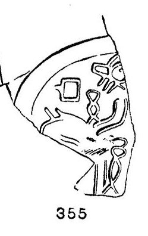
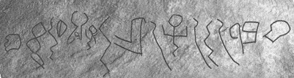
Custom SVG glyphs hand-traced from the 'History of Tamil Script' evolution chart at Dakshina Chitra museum, Chennai; the 3rd century BC geometric forms were used. No dedicated Unicode block exists for this archaic Tamil-Brahmi variant.
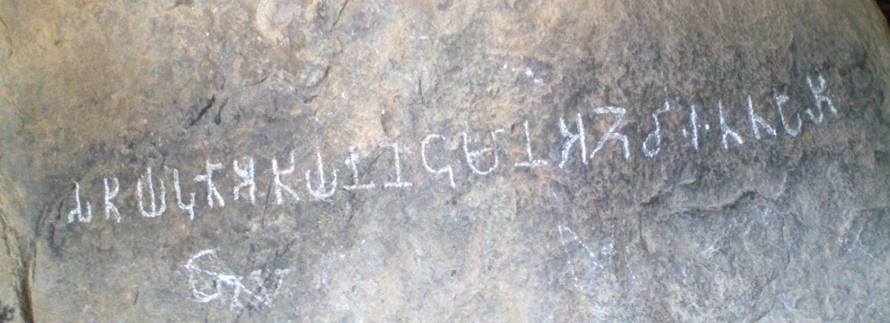
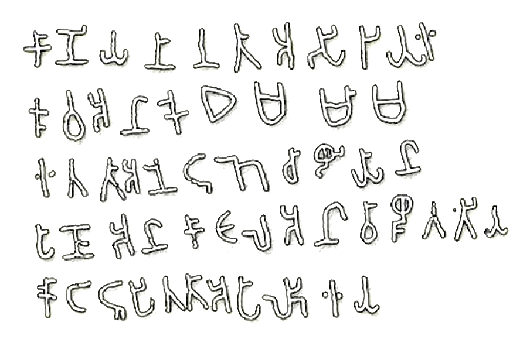
SVG glyphs traced from historical inscriptions of the Gauḍī script (10th–14th century CE, eastern India). No dedicated Unicode block exists; modern descendants Bengali and Odia are encoded separately.
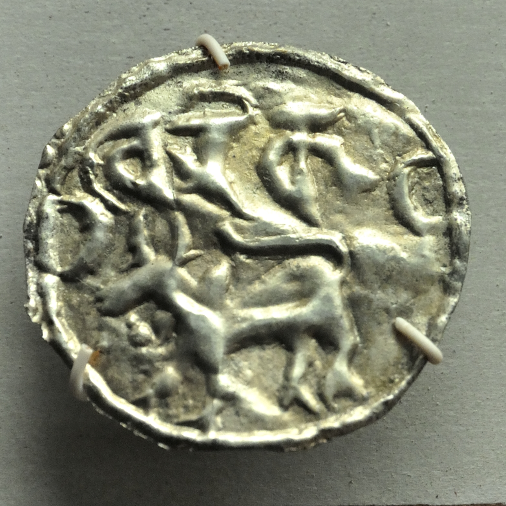
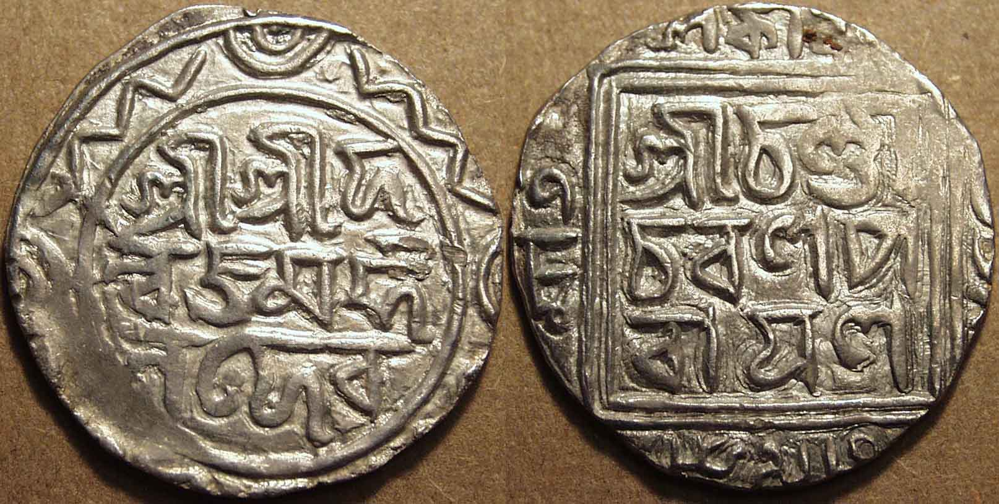
Glyphs traced from Pallava-period stone inscriptions (4th–9th century CE, South India). The script has no dedicated Unicode block; a proposal for U+11F60–U+11F7F has been submitted to Unicode but not yet accepted.
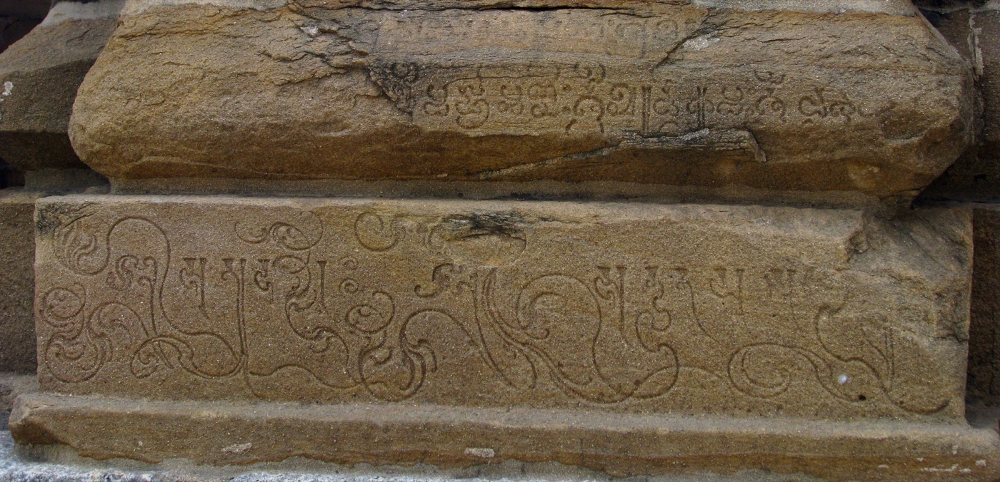
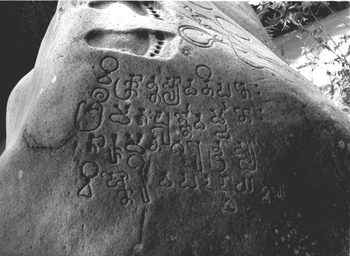
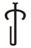
kaAn abugida used in Tamil Nadu and Kerala from approximately the 6th to 13th centuries CE, evolved from Tamil-Brahmi. Notable for its rounded letterforms; served as a transitional script toward early Malayalam. No Unicode block has been assigned.
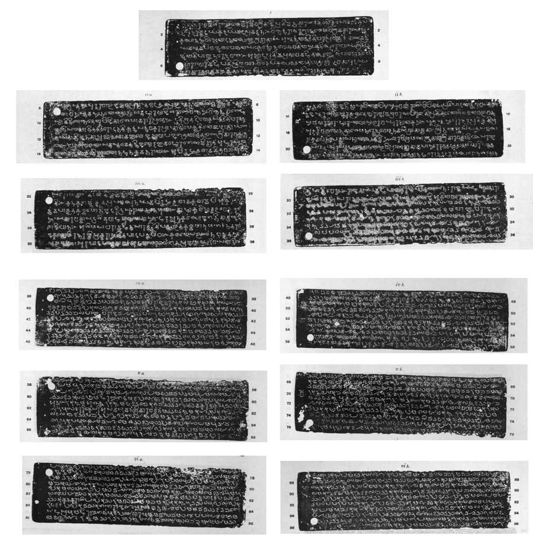
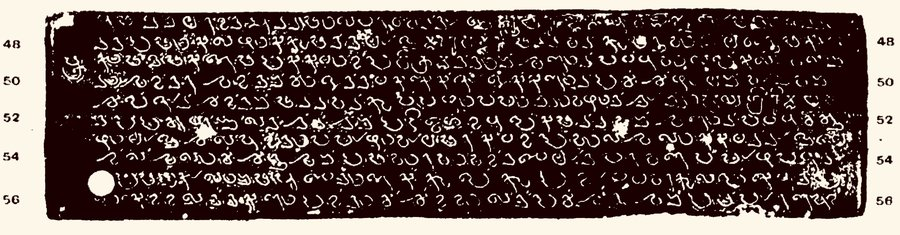
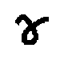
No dedicated Unicode block exists. Glyph images were sourced from Wikipedia reference charts and are stored locally.
Glyph images sourced from Wikipedia's Gupta script article. The Gupta script has no dedicated Unicode block; it is treated as a stylistic variant of Brahmi in the Unicode Standard.
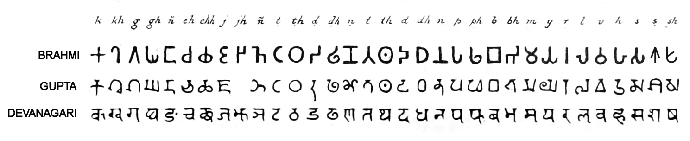
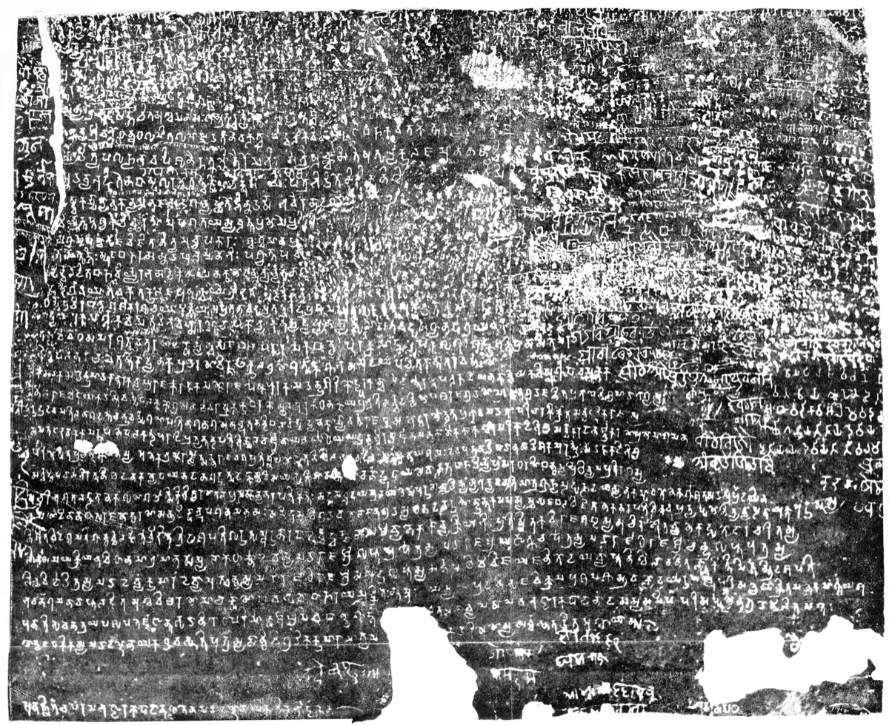
All other scripts use their standard Unicode block directly.
Imperial Aramaic, U+10840–U+1085F · Wikipedia ↗Brahmi, U+11000–U+1107F · Wikipedia ↗Siddham, U+11580–U+115FF · Wikipedia ↗Sharada, U+11180–U+111DF · Wikipedia ↗Devanagari, U+0900–U+097F · Wikipedia ↗Bengali, U+0980–U+09FF · Wikipedia ↗Gurmukhi, U+0A00–U+0A7F · Wikipedia ↗Gujarati, U+0A80–U+0AFF · Wikipedia ↗Oriya, U+0B00–U+0B7F · Wikipedia ↗Grantha, U+11300–U+1137F · Wikipedia ↗Tamil, U+0B80–U+0BFF · Wikipedia ↗Telugu, U+0C00–U+0C7F · Wikipedia ↗Kannada, U+0C80–U+0CFF · Wikipedia ↗Malayalam, U+0D00–U+0D7F · Wikipedia ↗Sinhala, U+0D80–U+0DFF · Wikipedia ↗Tibetan, U+0F00–U+0FFF · Wikipedia ↗Phags-pa, U+A840–U+A87F · Wikipedia ↗Meetei Mayek, U+ABC0–U+ABFF · Wikipedia ↗Lepcha, U+1C00–U+1C4F · Wikipedia ↗Limbu, U+1900–U+194F · Wikipedia ↗Tirhuta, U+11480–U+114DF · Wikipedia ↗Kaithi, U+11080–U+110CF · Wikipedia ↗Syloti Nagri, U+A800–U+A82F · Wikipedia ↗Chakma, U+11100–U+1114F · Wikipedia ↗Myanmar, U+1000–U+109F · Wikipedia ↗Khmer, U+1780–U+17FF · Wikipedia ↗Thai, U+0E00–U+0E7F · Wikipedia ↗Lao, U+0E80–U+0EFF · Wikipedia ↗Cham, U+AA00–U+AA5F · Wikipedia ↗Balinese, U+1B00–U+1B7F · Wikipedia ↗Javanese, U+A980–U+A9DF · Wikipedia ↗Sundanese, U+1B80–U+1BBF · Wikipedia ↗Kawi, U+11F00–U+11F5F · Wikipedia ↗Tagalog, U+1700–U+171F · Wikipedia ↗Buginese, U+1A00–U+1A1F · Wikipedia ↗Batak, U+1BC0–U+1BFF · Wikipedia ↗Tai Tham, U+1A20–U+1AAF · Wikipedia ↗Modi, U+11600–U+1165F · Wikipedia ↗Newa, U+11400–U+1147F · Wikipedia ↗Takri, U+11680–U+116CF · Wikipedia ↗Khojki, U+11200–U+1124F · Wikipedia ↗Hanunoo, U+1720–U+173F · Wikipedia ↗Buhid, U+1740–U+175F · Wikipedia ↗Tagbanwa, U+1760–U+177F · Wikipedia ↗Myanmar, U+1000–U+109F · Wikipedia ↗Ahom, U+11700–U+1174F · Wikipedia ↗Tai Viet, U+AA80–U+AADF · Wikipedia ↗New Tai Lue, U+1980–U+19DF · Wikipedia ↗Rejang, U+A930–U+A95F · Wikipedia ↗Soyombo, U+11A50–U+11AAF · Wikipedia ↗Zanabazar Square, U+11A00–U+11A4F · Wikipedia ↗Tulu-Tigalari, U+11380–113FF · Wikipedia ↗